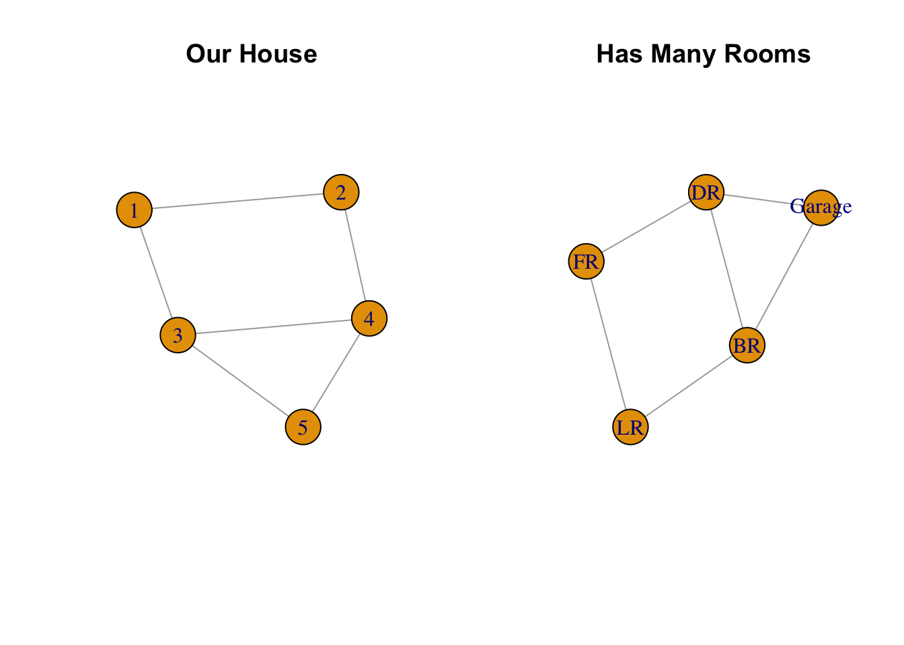
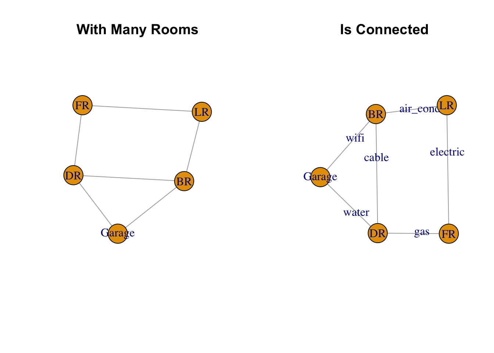
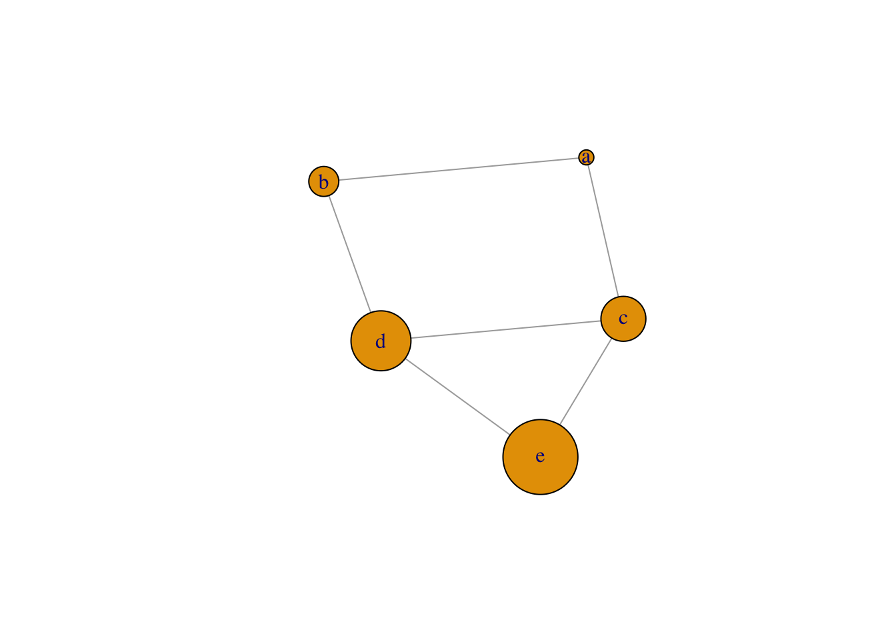

Chapter 3 Graph Modification
3.1 Load plot “House”
## 5 x 5 sparse Matrix of class "dgCMatrix"
##
## [1,] . 1 1 . .
## [2,] 1 . . 1 .
## [3,] 1 . . 1 1
## [4,] . 1 1 . 1
## [5,] . . 1 1 .## [1] 0 1 1 0 0## [1] 1 0 0 1 0par(mfrow = c(1, 2))
#plot graph object
plot(g1,
vertex.size = 30,
vertex.color = 1, #default
main = "Our House"
)
#assign attribute & label nodes
vertex_attr(g1, name = "rooms") <- c("LR", "FR", "BR", "DR", "Garage")
plot(g1,
vertex.size = 30,
vertex.color = 1,
vertex.label = V(g1)$rooms,
main = "Has Many Rooms"
)
3.2 Get Edges
## + 6/6 edges from afaa2be:
## [1] 1--2 1--3 2--4 3--4 3--5 4--5edge_attr(g1, name = "services") <- c("electric", "air_cond", "gas", "cable", "wifi", "water")
par(mfrow = c(1, 2))
plot(g1,
vertex.size = 30,
vertex.color = 1,
vertex.label = V(g1)$rooms,
main = "With Many Rooms"
)
plot(g1,
vertex.size = 30,
vertex.color = 1,
vertex.label = V(g1)$rooms,
edge.label = E(g1)$services,
main = "Is Connected"
)
3.3 Get Vertices
## + 5/5 vertices, from afaa2be:
## [1] 1 2 3 4 53.3.1 Add vertices attribute
## $rooms
## [1] "LR" "FR" "BR" "DR" "Garage"
##
## $label
## [1] "a" "b" "c" "d" "e"#set_vertex_attr(g1, name = "size", value = seq(10, 50, by =10))
V(g1)$size <- seq(10, 50, by = 10)
plot(g1)